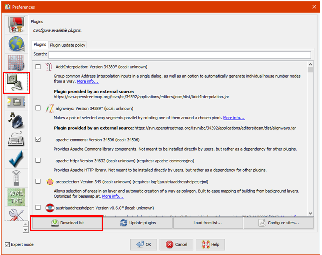

Using To-Do List in JOSM
Download page as PDFObjectives:
- To be able to do plugin installation to input data in JOSM
- To be able to operate to-do list plugin in JOSM to input the data
After conducting a survey using the OpenMapKit (OMK) application, the next step you need to do is to input survey data as points in OpenStreetMap using JOSM. To make it easier for you to do that, you need to install JOSM plugin named Todo list plugin. The Todo list plugin is an additional tool that can help you quickly find and edit the survey results that you will upload on the OpenStreetMap (OSM).
I. Installing to-do list plugin in JOSM
Because the Todo list plugin is an additional tool in JOSM, you need to install the JOSM plugin first before using it. The steps to install the todo list plugin in JOSM are as follows:
- Click on the menu bar Edit → Preferences
- The Preferences window will appear and select the Plugins menu to install the new plugin. If the plugins list has not yet appeared, you can click Download list and make sure your internet is connected to download the plugin.

The Preferences window for Plugins option menu
- To find the todo list plugin you can use the Search box. Then type todo in the search box to find the todo list plugin. After that, you need to give a checkmark in the todo plugin box in order to download the plugin and click OK then wait until the download process finishes.

Todo plugin search result
- The todo plugin window box will appear to the right of the map canvas and if the todo box does not appear, you can activate the todo plugin panel by clicking on the Windows menu bar, then clicking the todo menu. You will see the Todo list panel on the right panel.

The display of Todo list panel
II. Using to-do list
The steps to use the to-do list plugin are as follows:
- Firstly, you need to add all .osm files into that will be uploaded into JOSM. These .osm files contain survey point objects that have been exported from OpenMapKit (OMK). You should open the files by clicking File → Open on the menu bar.
- Because one file contains only one point object, you need to combine all the layers into one layer. You can merge the files by selecting all the layers on the Layers panel then right-click and choose Merge option. You can select several layers at one time by clicking on one layer then hold to select all layers on the panel or simply click layers one by one by pressing the Ctrl key on your keyboard.

Merge several layers into one layer
- After all the point objects have been merged into one layer, you need to select one of the objects that you want to work on. You should add all the object points into the to-do list by selecting all points then clicking Add button on the Todo list panel.

Add list objects into todo list panel
- To zoom in on one of the objects you want to work on, you can use the Zoom option in the Todo list panel or double-click on the object in the list.

Zoom in the objects through Todo list panel
- After you find the object that you want to work on and have made the necessary changes, you can mark the object on the todo list to remove the object name from the list by clicking Mark on the Todo list panel. You also can mark by selecting objects directly on the map then clicking Mark selected. To gain a deeper understanding of adding OSM data, you should refer to Adding OSM Data Using JOSM module.

Mark the object using Mark option
- If you want to skip an object but still want to leave that object in the list to do later, you should click Pass.

Skip the object using Pass option
- To mark all the objects in the list directly you can use the Mark All option by right-clicking on the Todo list panel. Then, if you want to bring back all objects that have been marked, you can use the Unmark all option. You can also delete the entire object name list in the Todo list panel by right-clicking on the panel and clicking Clear the todo list.

Several options on Todo list panel
SUMMARY
If you can follow and pay attention to all the stages in this chapter, then you have successfully installed the plugin in JOSM. In addition, you have also successfully learned and practiced how to operate the Todo list plugin in JOSM to facilitate your work.